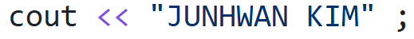
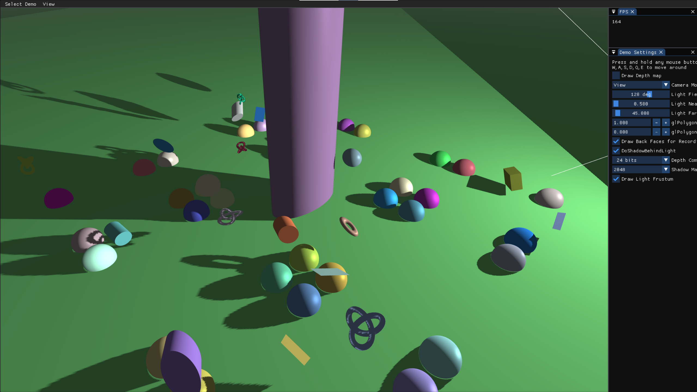

3D Graphics

This project focuses on the implementation of a multi-pass shadow mapping technique in an OpenGL-based 3D graphics engine. The primary objective was to dynamically generate and render realistic shadows cast by a perspective light source. By utilizing custom Framebuffers to capture depth information from the light's point of view, the system evaluates fragment occlusion in the main rendering pass. Furthermore, the project enhances the overall scene's visual immersion by integrating an exponential squared fog system and applying proper gamma correction to the final lighting calculations.
Texture class to support generating distinct Depth maps (LoadAsDepthTexture) using hardware-friendly comparison modes (GL_COMPARE_REF_TO_TEXTURE) and RGBA color targets. Fully implemented the FrameBuffer class lifecycle to manage texture attachments safely using proper GL:: wrappers (e.g., GL::GenFramebuffers, GL::FramebufferTexture2D).
ViewMatrix() and ToWorldMatrix() operations in the Camera class to accurately translate and rotate basis vectors into robust view and world transformations.
renderToDepthBuffer(), temporarily rebinding the framebuffer and applying GL_POLYGON_OFFSET_FILL to render the scene's depths from the light's perspective while mitigating shadow acne.renderToScreen(), binding the generated depth texture to the shadow shader for testing scene occlusion based on depth proximity.drawLightFrustum() and drawDepthTexture() utilizing inverse matrices and NDC quads to project the light's field-of-view bounding box and inspect the captured depth map directly in real-time.vPositionInShadowSpace) within the vertex shader. Utilized textureProj() for shadow-map lookups in the fragment shader, capping bounds computationally to prevent false shadow casting behind the light source. Overlaid a distance-based Exponential Squared Fog and concluded with standard Gamma Correction (pow(color, 1/2.2)).
Implementing shadow mapping provided profound insights into the inner workings of multi-pass rendering and specific graphics pipeline constraints.
One of the primary complexities was resolving "shadow acne" and geometric overlapping artifacts; managing the nuances of glPolygonOffset variables significantly improved the resulting visual purity.
Additionally, tracking down compiler integration bugs—such as C++ enum implicit conversion warnings inside Emscripten WebGL builds and abstracting legacy raw OpenGL pointers properly under localized wrapper functions—reinforced strict software architectural habits. Effectively mapping perspective matrices step-by-step from Clip Space → Light View Space → World Space during the light frustum debug rendering fundamentally bridged the gap between theoretical linear algebra and practical 3D visualizations.